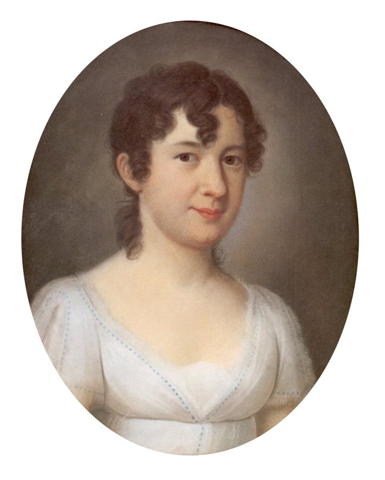

Poesia del giorno · 20 novembre


Marianne von Willemer
Marianne Jung arrivò a Francoforte a quattordici anni, ballerina e cantante di teatro. Il banchiere Johann Jakob Willemer la prese in casa e più tardi la sposò. Nelle estati del 1814 e del 1815 Goethe fu loro ospite alla Gerbermühle, sul Meno, e a Heidelberg; dopo il settembre 1815 non si videro più. Nel Buch Suleika del West-östlicher Divan lei è Suleika e lui Hatem.
Goethe mise nel Divan anche alcune poesie di lei, senza dirlo a nessuno. Marianne tacque per tutta la vita e lo confidò soltanto, da vecchia, al germanista Herman Grimm, che lo rese noto dopo la sua morte. Questa è la più celebre, il canto del vento d'occidente: lei lo invidia perché può arrivare da lui. Schubert e Mendelssohn l'hanno messa in musica.
Ach! um deine feuchten Schwingen
Ach! um deine feuchten Schwingen, West, wie sehr ich dich beneide: Denn du kannst ihm Kunde bringen, Was ich in der Trennung leide. Die Bewegung deiner Flügel Weckt im Busen stilles Sehnen; Blumen, Augen, Wald und Hügel Stehn bey deinem Hauch in Thränen. Doch dein mildes sanftes Wehen Kühlt die wunden Augenlieder; Ach, für Leid müßt’ ich vergehen, Hofft’ ich nicht zu sehn ihn wieder. Eile denn zu meinem Lieben, Spreche sanft zu seinem Herzen; Doch vermeid’ ihn zu betrüben Und verbirg ihm meine Schmerzen. Sag ihm, aber sag’s bescheiden: Seine Liebe sey mein Leben, Freudiges Gefühl von beyden Wird mir seine Nähe geben.
Ah, le tue ali umide, vento d’occidente, quanto te le invidio: tu puoi portargli notizia di quanto soffro lontana. Il battito delle tue ali mi sveglia in petto un desiderio quieto; fiori, occhi, bosco e colline al tuo soffio sono in lacrime. Ma il tuo spirare mite e lieve rinfresca le palpebre ferite; ah, morirei di pena se non sperassi di rivederlo. Corri dunque dal mio amato, parla piano al suo cuore; ma bada a non rattristarlo e nascondigli il mio dolore. Digli, ma diglielo con discrezione: che il suo amore è la mia vita; la gioia di tutte e due le cose me la darà la sua vicinanza.
«Suleika», nel Buch Suleika del West-östlicher Divan di Goethe (prima edizione Stoccarda, Cotta, 1819) · testo dall’edizione di Vienna, Armbruster, 1820, pp. 157–158 · stampa su Internet Archive